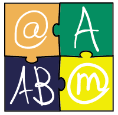

Harjoitus Ajokortti |
||
|
TIEKEn tutkinnot ovat aidosti kansalaisten tietoteknisiä valmiuksia mittaavia tutkintoja. Tutkintotodistus on osoitus tieto- ja viestintäteknisistä osaamisesta. Tutkintoja on neljä: @-kortti, A-tutkinto, AB-tutkinto sekä TIETY - Tietotyötutkinto. TIEKEn hallinnoima Tietokoneen ajokortti on ohjelmistoriippumaton tutkinto, joka näyttökokein kertoo suorittajan tietoteknisistä valmiuksista. Tutkinnon perusteet tarjoavat hyvän rakenteen tietoteknisten taitojen opettamiseen ja näyttökokeet on mahdollista suorittaa myös ilman valmentavaa koulutusta.. Kaikki tutkinnot suoritetaan ohjelmistoriippumattomasti moduulikohtaisina näyttökokeina. Kun läpäisee kaikki moduulit, saa virallisen, kolmikielisen tutkintotodistuksen. Mikäli tutkinto jää kesken tai sitä tenttii useammassa organisaatiossa, saa osasuorituksista opintokortin. Tutkintojen osasuoritukset eivät vanhene. Keskenjäänyttä tutkintoa voi jatkaa tauon jälkeen. TIEKE kuitenkin suosittelee, että yli 5 vuotta vanhat suoritukset päivitetään uudempiin versioihin. @- ja A-kortin tutkintokielet ovat suomi, ruotsi ja englanti. AB-kortin ja TIETY-tutkinnon voi suorittaa suomen kielellä. Tutkinnot ovat ohjelmistoriippumattomia. Noin 250 organisaatioita Suomessa tarjoaa tutkintoihin tähtäävää koulutusta ja järjestää näyttökokeita. Varmista ajankohtaisimmat koulutukseen ja tutkintojärjestelyihin liittyvät tiedot koulutusorganisaatioltasi. Linkit koulutusten ja tutkintojen järjestäjien sivuille löydät suorituspaikkahausta. Kaikki TIEKEn tutkintoja ja niiden osia suorittavat rekisteröityvät Tutkintopalveluun. Palvelussa osallistujat voivat mm. seurata suoritustietojaan. |
 | |